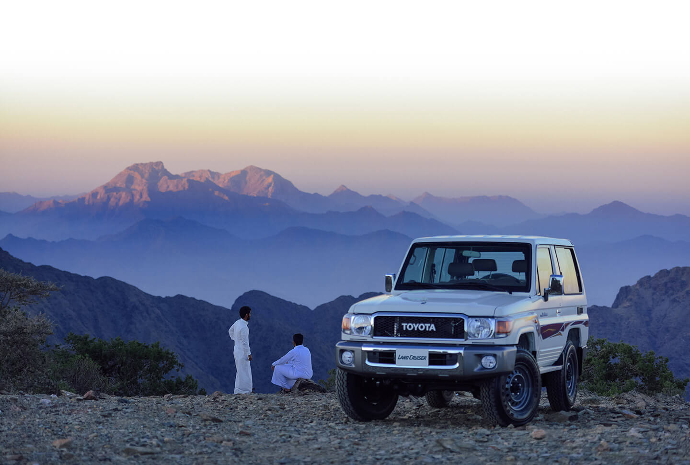

اعرف المزيد عن شركة عبد اللطيف جميل موتورز ،
الشركة الأم لشركة تويوتا السعودية.
نحن نؤمن بسياسة العميل أولا!
تحرص شركة عبد اللطيف جميل للسيارات على تطبيق مبدأ "الضيف أولا"، حيث نعمل على توفير مرافق وخدمات تجعل شراء وتملك سيارات تويوتا تجربة مرضية لعملائها بكل المقاييس. وتدعم الشركة الانتشار الواسع لسيارات تويوتا في السوق السعودي عبر شبكة ممتدة من مراكز البيع والصيانة الموزعة استراتيجياً في معظم أنحاء المملكة لتوفر راحة البال لعملائها أينما كانوا، مستندة لسياسة "الضيف أولاً"، والتزامها بالتميز في كل ما تقدمه.
أدرك السيد عبد اللطيف جميل منذ البداية أهمية وسائل النقل الشخصية لأبناء المملكة العربية لسعودية. وحتى من قبل ظهور الطرق المعبدة، رأى السيد كيف ستعود سيارات الدفع الرباعي 4x4 بالنفع على عملائه مما يتيح لهم التحرك بسهولة على كافة الطرق داخل المملكة. وهكذا كانت أول طلبية من سيارات “BJ” ذات الدفع الرباعي بداية رحلة عمر مع تويوتا. وفي عام 1955، أصبحت شركة عبد اللطيف جميل الموزع المعتمد لسيارات تويوتا في السعودية ولا تزال هذه العلاقة الوثيقة مستمرة حتى اليوم.
في عام 1945 بدأ المؤسس عبد اللطيف جميل أولى مشروعاته بفكر ورؤية تضع عملائه في المقدمة دائما، والمعروفة بإسم "الضيف أولا". وقد اقترن هذا المبدأ الراسخ بمنهج ورؤية السيد عبد اللطيف جميل ليصبح حجر الأساس للشركة التي تحمل اسمه اليوم.
عبر العلاقة المتميزة مع شركة تويوتا للسيارات، حققت شركة عبداللطيف جميل نمواً مستمراً على مدى السنوات لتصبح إحدى الكيانات الرائدة في قطاع
السيارات بالمملكة، وواحدة من أهم الموزعين المعتمدين المستقلين لسيارات تويوتا في العالم.
دعنا نذهب لأماكن
نحن نعمل في صناعة السيارات والشاحنات الرائعة. لكننا نعمل أيضًا كل يوم لتطبيق
خبراتنا ومشاركتها بطرق تفيد الناس والمجتمع وكوكبنا من أجل بناء غدٍ أفضل.
الطريقة التي نعمل بها
كيف نصنع بعض المركبات الأكثر تقدمًا وموثوقًا وآمانًا؟ يبدأ بمبادئ التصنيع وفلسفة
الإدارة لدينا. نحن نبحث دائمًا عن طرق لتحسين عملياتنا ، ونعمل دائمًا على تحدي أنفسنا
